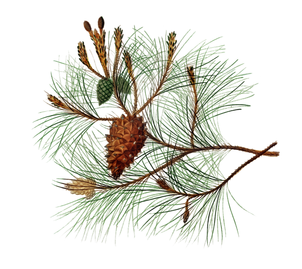

Pine Needle Tea

Ingredients
- 1 cup of fresh pine needles
- 4 cups of water
- Honey or your sweetener of choice (optional)
Utensils & Cookware
- A tea strainer or fine mesh sieve
- A medium-sized cooking pot
- A heating element or open flame
- A cup or thermos to enjoy your beverage
Instructions
- Harvest fresh pine needles and make sure to select those that are still green and aromatic. Avoid harvesting from areas that have been treated with pesticides or other chemicals.
- Rinse the needles thoroughly in water to remove any dirt or debris. Pat them dry when finished.
- Break the needles into smaller pieces — not too fine as to make straining difficult but enough to allow the natural flavor of the needles to extract more easily.
- In a cooking pot, bring the water to a boil.
- Add the chopped pine needles to the pot and reduce the heat to a simmer. Allow the pine needles to steep for 15-20 minutes or to your preferred strength.
- Once the flavor has been extracted, strain the tea into your cup or thermos.
- If desired, sweeten the tea with honey or even add your favorite aromatics like lemon for extra flavor.